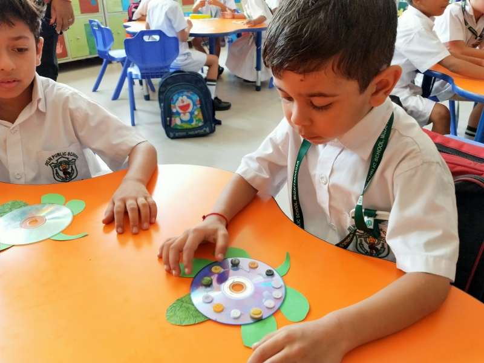
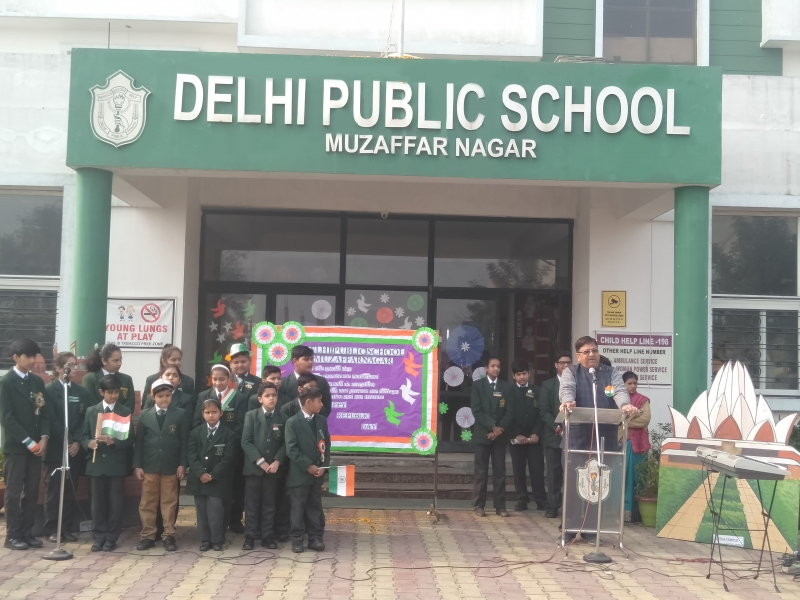
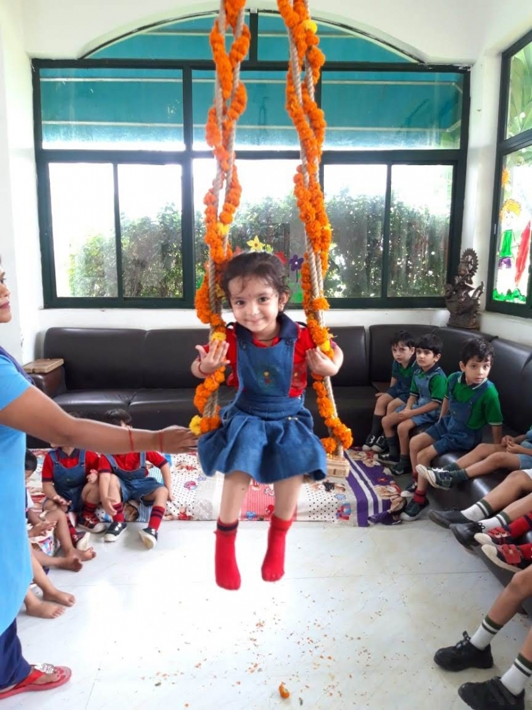
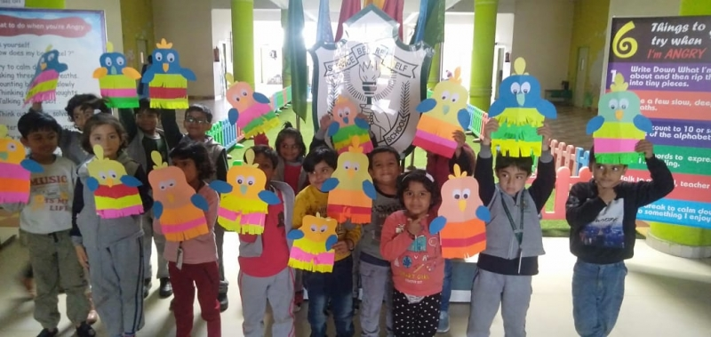
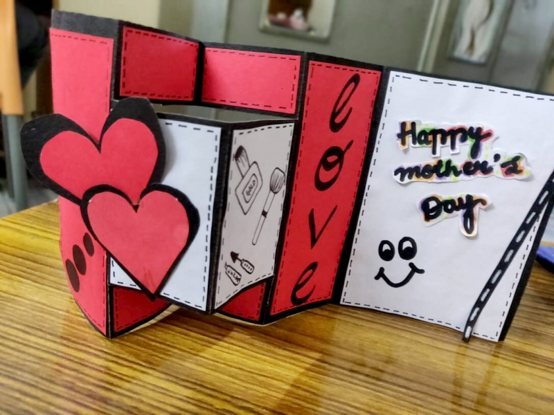

Our vision is to digitalize the educational system in order to cope with the technological change,
urbanization and globalization and to devote to the universe a vibrant community striving for excellence.
We seed enthusiastic aspiration to reap the best future generation.
We are in a mission to bring forth the school’s motto ‘Service before Self’, Our school prioritizes at
strengthening the social bond, by inculcating humanity and culture, which is the need in today’s
unabated combative world. The school aims to prepare the students to get accustomed to critical
thinking, thus making them self-reliant and focus intensely on creativity, innovation and collaborative learning.
Dear Parents, Staff and Students,
It gives me an immense pleasure to welcome you all to Delhi Public School, Muzaffarnagar. As I retrospect, I visualize the path of triumph that is trodden by the numerous footprints of the consecrated individuals. The guidance of the luminaries, support by the parents, remarkable efforts of the teachers and commendable achievements by the students have served as beacon light and empowered us to accomplish tremendously in a short period of time. The commitment of Delhi Public School, Muzaffarnagar, is to provide a safe and intellectually thought-provoking aura in which the students would be empowered to be the creative thinkers and be able to encounter the challenges of the emulous world.
Besides the highest academic performance, we aim at creating benign humans and responsible citizens.
It is a known fact that the motto of Delhi Public School Society is “Service before Self” and this legacy is imparted to every Dipsite of the world and our students are no exception. They are taught that the well being and safety of others always come prior to our own welfare and security.
Our teaching community design and implement those strategies that enable the accomplishment of our sole goal, that is, holistic development of a child. They increase the quality of instruction and enhance the teaching-learning by integrating a variety of innovative technological tools and resources and create opportunities for collaborative learning, problem-solving, and introduce them to the real life situations in the class rooms and laboratories.
We offer a range of sports and cultural activities for the students to pursue. It is a matter of pride for us when the Dipsites of Muzaffarnagar, sweep umpteen medals and trophies in various contests, in just the budding stage of the school. I feel highly felicitous at the tremendous achievements of the young talents both in the scholastic and co scholastic domains. This is a proof that every child is unique in his / her own profile.
There are two outcomes of imparting knowledge to an individual, either to enlighten him to live a life or train him to earn a living. “Give a man a fish and you feed him for a day; teach a man to fish and you feed him for a lifetime” says Maimonides. Ergo, We at DPS, Muzaffarnagar, primarily aim at the development of skills; be it cognitive, social, technical and interpersonal. We strongly believe that, it is these skills that empower an individual to survive in this highly combative world and live his life successfully by accomplishing his goals. This is the sustenance of not only the individual but the progress of our nation as well. The more the skilled personnel the better the job opportunities and that leads to a booming economy.
We encourage parent participation in child’s learning as de facto parents are the first ‘guru’ of the child.
This URL showcases the wealth of experiences that we offer to the children and is a place where the announcements and latest events will be readily available for the students, staff and parents. Kindly do have regular access to it and keep yourself updated with the latest news.
We hope you enjoy your virtual visit to our website. Please feel free to contact for any queries and guided tour.
Enjoy surfing.
Regards
Principal
a
b
c
d
e
f
g